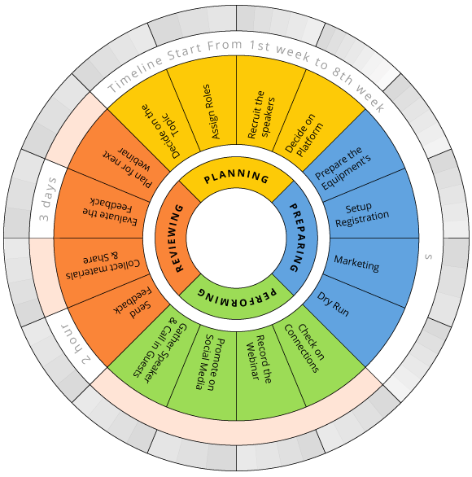

<ion-header class="ion-no-border slidein" translucent>
  <ion-toolbar color="menu" [class.show-background]="showToolbar" style="margin-top: 25px;">
    <ion-buttons slot="start">
      <ion-menu-button class="menucs"></ion-menu-button>
    </ion-buttons>
    <ion-icon *ngIf="userDetail.reg_UserType=='Admin'" (click)='Update()' style="color: #f29500;" class="foure" src="../../assets/img/35.svg"></ion-icon>
    <ion-icon *ngIf="userDetail.reg_UserType=='User'" (click)='User()' class="foure" src="../../assets/img/7.svg"></ion-icon>
  </ion-toolbar>
</ion-header>
<ion-content class="slidein">
<div class="introduction">
  <h2>Webinar Title</h2>
  <h3 style="width:300px">{{WebinarDetail.webinar_Title}}</h3>
  <div class="prototype">
    <div class="items">Presenter</div> <div class="items grey">{{WebinarDetail.webinar_Name}}</div>
    <div class="items2">Created On </div> <div class="items2 grey">{{WebinarDetail.webinar_Date  | date: 'dd/MM/yyyy'}}</div>
  </div>
  
  <button (click)="GetStart()" ion-button class="but m-b-2 butw">Lets Get Start</button>
</div>
</ion-content>
<!-- Footer without a border -->
<!-- <app-footer></app-footer> -->
<ion-footer class="ion-no-border slidein">
  <ion-toolbar>
  <div class="flex-tool">
    <ion-icon class="fot-icons active" [routerLink]="['/mywebinar']" src="../../assets/img/45-home.svg"></ion-icon>
    <ion-icon class="fot-icons" src="../../assets/img/1.svg" [routerLink]="['/personal-detaills']" ></ion-icon>
    <button ion-button class="but m-b-2" (click)="Collapse()">Collapse</button>
    <ion-icon class="fot-icons" *ngIf="userDetail.reg_UserType=='Admin'" [routerLink]="['/admin-webinar']" src="../../assets/img/21.svg"></ion-icon>
    <ion-icon class="fot-icons" *ngIf="userDetail.reg_UserType=='User'"  [routerLink]="['/createwebinar']" src="../../assets/img/21.svg"></ion-icon>
    <ion-icon class="fot-icons" src="../../assets/img/27.svg"  (click)="presentModal()"></ion-icon>
  </div>
  </ion-toolbar>
</ion-footer>